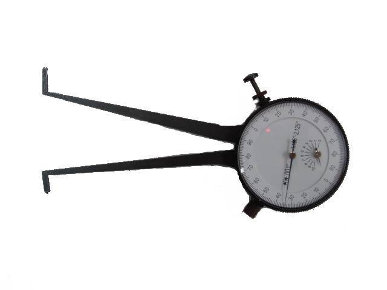

-
I don't know if the lower diameter of the tube is the same between the two types, it is possible they will fit just fineRaven;333854 wrote: Ok I see it now. Also, you said tested with turbo tubes. What about NA tubes?
If someone has chopped some non-turbo tubes down and can get me measurements to verify, then I can tell you for sure -
The tubes are the same diameter at the bottom. I know one is larger than the other for the majority of the tube but then necks down at the end to match the other.

1988 300zxt. gt35, stance, etc. Wheels: Varrstoen ES2 18x9.5 et-13 225/40. 18x10.5 et0 245/40
1990 jetta vr6'd -
I think that is the advantage… you can buy used coils for super cheap sometimes. Of course, used parts come with a risk, but if you are careful, it could work out well.ExtremeAtheist;333864 wrote: If these won't work with the n/a hubs, you should make a run of them for the guys with n/a hubs. I've seen tein s13 coils go for 300 bucks."Understeer is when you hit the wall with the front of the car. Oversteer is when you hit the wall with the rear of the car. Horsepower is how fast you hit the wall. Torque is how far you take the wall with you…"
-'68 Datsun 1600 Roadster
Build Thread: http://community.ratsun.net/topic/21…-build-thread/
-'85 300zx Turbo
Build Thread: http://z31performance.com/showthread…)build-thread! -
Need the inside diameter at the very bottom comparedDeleriousZ;333863 wrote: The tubes are the same diameter at the bottom. I know one is larger than the other for the majority of the tube but then necks down at the end to match the other.
*EDIT* someone with one of these to shove all the way in
 -
Yeah I would rather have these and not be limited to brand. Would love to rock some Tein's with the EDFC.私♥フェアレディ・ゼット
・1984 300zx N/A -
great idea, very interested in the product -
Great idea, but you still need the adapters for the rear coilsOriginally posted by adamvann3 -
The diameters at the bottom was determined to be the same, which is why you're able to use the slip on collar style adapters with both n/a and turbo tubes. At least the OD was, maybe the ID differs? Probably not though!G-E;333868 wrote: Need the inside diameter at the very bottom compared
*EDIT* someone with one of these to shove all the way in
1988 300zxt. gt35, stance, etc. Wheels: Varrstoen ES2 18x9.5 et-13 225/40. 18x10.5 et0 245/40
1990 jetta vr6'd -
Well.... to further complicate matters, 87T and 88T have different inner diameters… -
Ha!
(Activates memory banks on how to tear your idea to shreds)
Interesting way to tackle this.
I built something similar when I was trying my 3rd attempt to get the S14 stuff to work on my car. It was an unholy monster with a piece of S14 knuckle attached to the top of the strut tube. I would have needed to brace the hell out of it to make it permanent. IIRC, I also had some bad geometry stuff going on too, I don't remember. I just scrapped it.
In theory, the geo is the same as Z31 because your steering axis is the same. But the thing about these struts is that they move in an arc, and they are affected by the compression of the suspension. You would have to replicate the S-chassis knuckle mounting points to get this right, and you can't because the strut towers are different, and it probably wouldn't be as strong/too heavy.
Pros:
-Can use a bunch of cheap used coilovers
Cons:
-See above. Also, adjusting camber at the knuckle isn't the best way to adjust camber, for similar reasons. (Yes, I'm aware OEM's use this method to do it)
-Still have to weld.
-Costs more than Stance/PT/S9 adapters.
What you should do, is modify this piece to accept a UCF10 upper ball joint. Then guys can convert to double wishbone and be rad. It'll be the next big deal.
sigpic -
I understand some things would be out of whack if all you did was weld the upper s14 portion onto the z31 spindle, the two holes on the S are offset from each other as are the bolt holes in the strut… BUT on the S they also mount closer to the hub than in the case of my adapter, the holes in mine are not offset, the whole piece is offset, so the angles realign mostly
The struts on the S are more vertical than the Z, you can't change that, but I also don't see how this is a problem, if the offset strut is angled more forward on the inside wheel and angled more outward on the outside wheel in a turn, this shouldn't be significantly more angle than a z31 strut top sees at full lca extension during compression… remember also that in the target market we're dealing with pillowballs not rubber bushings
PS. I thought of that double wishbone thing a billion years ago before I disappeared, but that involves sourcing a lot of potentially hard to obtain parts, and a lot of cutting and welding all around… kinda the opposite of the intent here where a drill, a hacksaw, and a cheap welder (or muffler shop) can do it
-
So I went back to check, seems 88T tubes are thinner walled than 87T tubes (.100 vs .130)
If this is the same for all 84-87 and 88-89, then I'll make only the 84-87 versions, running two flavours would negate the savings of a batch run -
Seriously, these are a silly idea considering that a pair of good quality z31 coilovers are available. There isn't even enough market for one company to carry z31 specific coilovers and we have 2 doing it. Maybe 1% could get the advantage out of these, but then the 1% would know how to do this without spending $260 for some part to use cheap, crappy s13 coilovers.G-E;333861 wrote: Mike stop trolling, you know you don't need z31 specific top hats, all you need is a drill…
Aside from which, why do you want to limit the market to stance/powertrix? Why do you want people to get the impression that they are the only game in town? What if someone wants to buy megans or fortuneauto or cusco?
If you don't want them, don't look at the thread
This is like solving a programming issue on Windows 98 when Windows 7 is available.
-
None of this would negate using stance or powertrix coilovers you know that right?
As a point of fact, say you order stance z31 kit from TF, you can ask them for s13 lower brackets instead of sleeves, just like many people have asked for z32 lower rear forks or retained s13 lower bushings instead of the normally supplied z31 version
Or say you picked up a stance s13 kit cheaply and you just ordered z31 top hats for them, it works both ways -
And asking for the S13 lower brackets instead of sleeves…you'd still have fubar'd geometry. Its best to just do it the good old way or get Z31 coils.G-E;334065 wrote: None of this would negate using stance or powertrix coilovers you know that right?
As a point of fact, say you order stance z31 kit from TF, you can ask them for s13 lower brackets instead of sleeves, just like many people have asked for z32 lower rear forks or retained s13 lower bushings instead of the normally supplied z31 version
Or say you picked up a stance s13 kit cheaply and you just ordered z31 top hats for them, it works both ways- VG30DET (HE341) 86 300ZX - 1982 280ZX Turbo - Headered NA 1986 300ZX 2+2 - 2000 Xterra -

Copyright © 2006–. All rights reserved. Privacy Policy